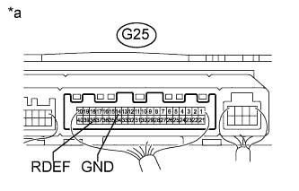

СИСТЕМА ОБОГРЕВАТЕЛЕЙ СТЕКОЛ > Система обогревателей заднего стекла не работает |
| 1.ВЫПОЛНИТЕ ДИАГНОСТИКУ В РЕЖИМЕ ACTIVE TEST С ПОМОЩЬЮ ПОРТАТИВНОГО ДИАГНОСТИЧЕСКОГО ПРИБОРА (РЕЛЕ ОБОГРЕВАТЕЛЯ ЗАДНЕГО СТЕКЛА) |
Выполните диагностику в режиме Active Test с помощью портативного диагностического прибора (Нажмите здесь).
| Информация на дисплее прибора | Испытываемое устройство | Диапазон регулирования | Замечание по диагностике |
| Defogger Relay (Rear) | Работа реле DEF | OFF (ВЫКЛ) / ON (ВКЛ) | - |
|
| ||||
| OK | |
| 2.ЗАМЕНИТЕ ИНТЕГРИРОВАННУЮ ПАНЕЛЬ УПРАВЛЕНИЯ В СБОРЕ |
Временно замените блок управления обогревателем новым или заведомо исправным (Нажмите здесь).
Проверьте работу обогревателя заднего стекла.
|
| ||||
| OK | ||
| ||
| 3.ПРОВЕРЬТЕ РЕЛЕ DEF |
 |
Извлеките реле DEF из блока реле моторного отсека, распределительного блока.
Измерьте сопротивление в соответствии со значениями, приведенными в таблице ниже.
| Контакты для подключения диагностического прибора | Состояние | Заданные условия |
| 3 - 5 | Напряжение аккумуляторной батареи подается на контакты 1 и 2 | Менее 1 Ом |
| 3 - 5 | Напряжение аккумуляторной батареи не подается на контакты 1 и 2 | 10 кОм или более |
|
| ||||
| OK | |
| 4.ПРОВЕРЬТЕ ЖГУТ ПРОВОДОВ И РАЗЪЕМ (РЕЛЕ DEF - АККУМУЛЯТОРНАЯ БАТАРЕЯ И МАССА) |
 |
Извлеките реле DEF из блока реле моторного отсека, распределительного блока.
Измерьте напряжение в соответствии со значениями, приведенными в таблице.
| Контакты для подключения диагностического прибора | Положение переключателя | Заданные условия |
| Контакт 2 реле DEF - масса | Зажигание выключено | менее 1 В |
| Контакт 2 реле DEF - масса | Зажигание включено | 11-14 В |
| Контакт 5 реле DEF - масса | Всегда | 11 - 14 В |
| *a | Вид спереди разъема со стороны жгута проводов: (к реле DEF) |
|
| ||||
| OK | |
| 5.ПРОВЕРЬТЕ ЖГУТ ПРОВОДОВ И РАЗЪЕМ (БЛОК УПРАВЛЕНИЯ СИСТЕМОЙ КОНДИЦИОНИРОВАНИЯ - РЕЛЕ DEF И МАССА) |
Отсоедините разъем G25 блока управления системой кондиционирования.
Извлеките реле DEF из блока реле моторного отсека, распределительного блока.
Измерьте сопротивление в соответствии со значениями, приведенными в таблице ниже.
| Контакты для подключения диагностического прибора | Состояние | Заданные условия |
| Контакт 1 реле DEF - G25-38 (RDEF) | Всегда | Менее 1 Ом |
| G25-14 (GND) - масса | Всегда | Менее 1 Ом |
| G25-38 (RDEF) - масса | Всегда | 10 кОм или более |
|
| ||||
| OK | |
| 6.ПРОВЕРЬТЕ БЛОК УПРАВЛЕНИЯ СИСТЕМОЙ КОНДИЦИОНИРОВАНИЯ |
|  |
Измерьте напряжение в соответствии со значениями, приведенными в таблице.
| Контакты для подключения диагностического прибора | Положение переключателя | Заданные условия |
| G25-38 (RDEF) - G25-14 (GND) | Зажигание включено, выключатель обогревателя стекла включен | 11-14 В |
| G25-38 (RDEF) - G25-14 (GND) | Зажигание включено, выключатель обогревателя стекла выключен | Менее 1 В |
| *a | Устройство с подсоединенным жгутом проводов (блок управления системой кондиционирования) |
|
| ||||
| OK | |
| 7.ПРОВЕРЬТЕ ЖГУТ ПРОВОДОВ И РАЗЪЕМ (СТЕКЛО ДВЕРИ БАГАЖНОГО ОТДЕЛЕНИЯ - РЕЛЕ DEF И МАССА) |
Отсоедините разъемы Y2*1 или X7*2 и X8*2 стекла двери багажного отделения (нити обогревателя стекла).
Извлеките реле DEF из блока реле моторного отсека, распределительного блока.
Измерьте сопротивление в соответствии со значениями, приведенными в таблице ниже.
| Контакты для подключения диагностического прибора | Состояние | Заданные условия |
| Контакт 3 реле DEF - Y2-2 | Всегда | Менее 1 Ом |
| Y2-1 - масса | Всегда | Менее 1 Ом |
| Y2-2 - масса | Всегда | 10 кОм или более |
| Контакты для подключения диагностического прибора | Состояние | Заданные условия |
| Контакт 3 реле DEF - X7-1 | Всегда | Менее 1 Ом |
| X8-1 - масса | Всегда | Менее 1 Ом |
| X7-1 - масса | Всегда | 10 кОм или более |
| Результат | Следующий шаг |
| OK (для моделей с механизмом открывания заднего стекла) | А |
| OK (для моделей без механизма открывания заднего стекла) | B |
| NG | C |
|
| ||||
|
| ||||
| А | ||
| ||